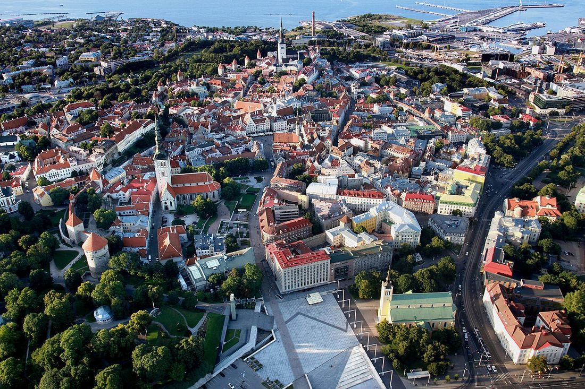
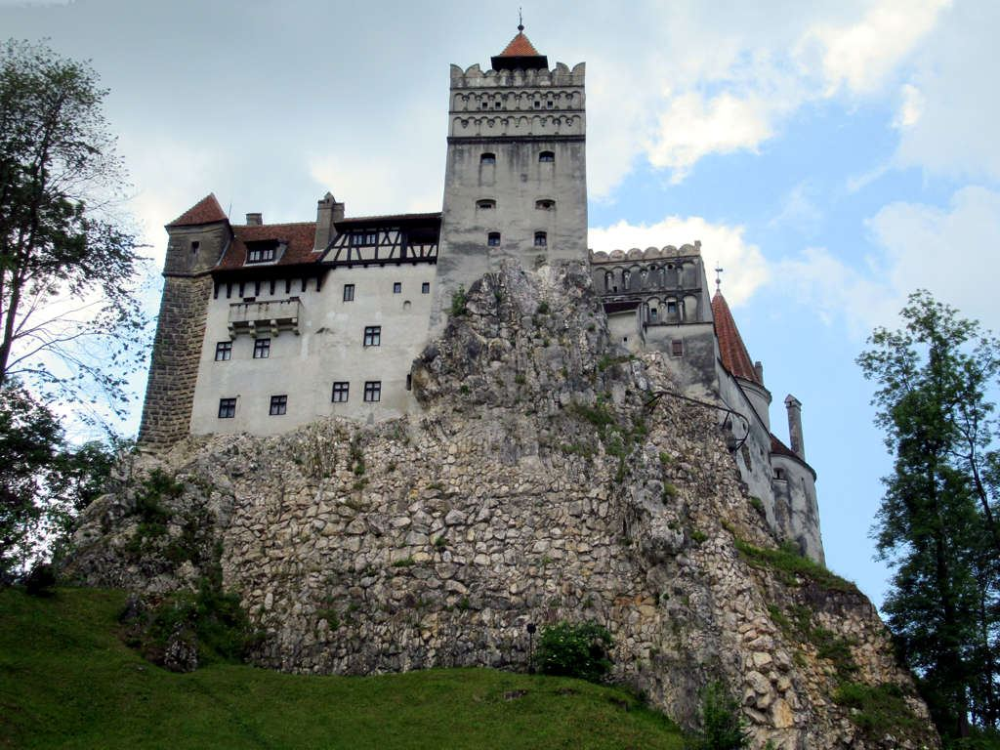
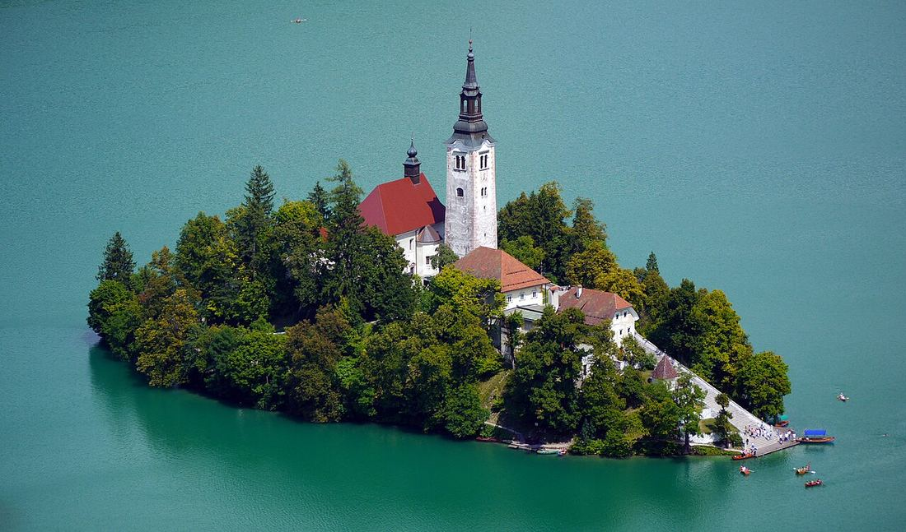

21
Leave, 2027
A plan for Aizat · built by Remy & Raffy
Split into two real trips, each timed to its own best season, built around your 21 days of leave and the March Australia trip already spoken for. Tap any stop to mark it planned, maybe, or skip. It saves on your phone.
14 days are left once Australia is out. This plan uses 11 across two trips and leaves 3 spare, in case a flight or a border crossing eats a day.
Two kinds below. Fixed-date ones are safe to book against. Islamic-calendar ones move with the moon and Malaysia hasn't gazetted 2027 yet, so those are estimates, not facts.

Research confirms summer is genuinely the right call here, not a default: the Baltics and Finland are at their best May to September, with June and July bringing 18 to 19 hours of daylight and the warmest, most reliable weather of the year. This trip is timed around the summer solstice on 21 June, so most evenings barely get dark.
Fly out of Vilnius, fly home from Helsinki (or reverse). No Malaysian holiday lines up with this window, so it runs on leave alone, bracketed by two weekends.

Five countries, five sets of research, one consistent answer: September and early October is the shared sweet spot across Slovenia, Slovakia, Serbia, Romania and Moldova, with mild temperatures, autumn colour, wine harvest, and the summer crowds gone. This trip also lands on Malaysia Day, a real confirmed public holiday, which is what makes 11 days cost only 6 of leave.

Five countries in 11 days is capital-hopping, not slow travel. Built that way on purpose to fit the leave budget, so cut a stop with the chips above if you'd rather linger.
Syria: the UK Foreign Office advises against all travel to the entire country, citing unpredictable security conditions and terrorism risk. There is no British consular support available from inside Syria at all. This has not been a routine destination through 2026.
Lebanon: advised against all travel to the southern suburbs of Beirut and the South and Nabatiyeh governorates specifically, and against all but essential travel to the rest of the country. Israeli strikes and Hizballah-linked incidents have continued into the advisory's most recent updates, alongside a standing terrorism threat to foreigners.
Checked against gov.uk/foreign-travel-advice, August 2026. Advisories change, sometimes quickly, so re-check both before booking anything, and check Malaysia's own Wisma Putra travel advisory too.
These two are deliberately left out of both 2027 trips above rather than routed through on a hope things improve by then. If conditions genuinely change, this is worth its own separate trip, planned closer to the date against whatever the advisory says then, not decided now.
Flight numbers, hotel picks, anything you want to change. Saved on this device only, nobody else sees it.